Lecture 3: Deep Learning: An Overview
Deep Learning for Actuarial Modeling
Summer School ‘Lifelong Learning’
Università Cattolica del Sacro Cuore, Milano
This overview lecture motivates deep learning for actuarial science and places it in historical perspective, then presents representation learning as the core machine learning principle: rather than hand-crafting features, the actuary provides raw data to the architecture and lets it learn what to extract. From there it builds the feed-forward neural network as a generalisation of the GLM, surveys convolutional, recurrent and attention-based architectures, and closes on the combined actuarial neural network (CANN), which adds a network correction to a fitted GLM baseline.
1 Motivation and historical perspective
1.1 Why deep learning in actuarial science?
Traditional actuarial approach: Manual feature engineering and manual model specification
Modern challenges: High-dimensional data, non-linearities, complex interactions between variables, unstructured data
Deep learning promises: Automated feature learning and universal approximation property
Actuarial opportunity: Better risk assessment, improved predictions, novel data sources, new products
\(\Longrightarrow\) Deep learning allows the actuary to move from hand-crafted features to machine-learned representations.
1.2 Historical perspective: the evolution
1943: McCulloch-Pitts formalize the first mathematical model of a neuron (McCulloch & Pitts, 1943).
1958: Perceptrons learn weights from data (Rosenblatt, 1958).
1969: Minsky-Papert highlight perceptron limits and help trigger the first AI winter (Minsky & Papert, 1969).
1986: Back-propagation popularized network training (Rumelhart, Hinton, & Williams, 1986).
1989-1991: Universal approximation theorems for network architectures (Cybenko, 1989; Hornik, 1991).
1997-1998: Long short-term memory (LSTM) model for long-range memory modeling (Hochreiter & Schmidhuber, 1997); LeNet-5 (CNN) for digit recognition (LeCun, Bottou, Bengio, & Haffner, 1998).
2012: AlexNet is a CNN that revolutionized computer vision (Krizhevsky, Sutskever, & Hinton, 2012).
2014-2016: Seq2Seq architectures and residual networks (ResNet) extend depth and stability (Sutskever, Vinyals, & Le, 2014; He, Zhang, Ren, & Sun, 2016).
2017: Transformer architecture and scaled dot-product attention layers boost large language models (LLMs) (Vaswani et al., 2017).
The Transformer architecture started off as a clever way to perform Seq2Seq forecast tasks. Decomposing it into an encoder and a decoder module has led to the standard generative pre-trained Transformer (GPT) architectures within LLMs.
2018+: Deep learning enters actuarial practice.
2020-2022: Foundation Models as a new modeling paradigm:
GPT-3+: few-shot generalization to new problems (Brown et al., 2020).
BERT: CLS token encoding (Devlin, Chang, Lee, & Toutanova, 2018).
Foundation Model framing (Bommasani et al., 2021).
Instruction following with human feedback (Ouyang et al., 2022).
2022+: Reasoning-focused training, prompting and RAG:
Chain-of-thought (CoT), retrieval augmented generation (RAG) (Wei et al., 2022; Kojima, Gu, Reid, Matsuo, & Iwasawa, 2022).
Self-consistency (multiple trials) improves multi-step reasoning (Wang et al., 2022).
1.3 Scaling laws
Key insight: Compute (GPUs/TPUs) \(+\) data \(+\) depth \(\to\) predictable scaling laws. Compute-optimal training guides model and dataset sizing having a joint power law (Kaplan et al., 2020; Hoffmann et al., 2022).
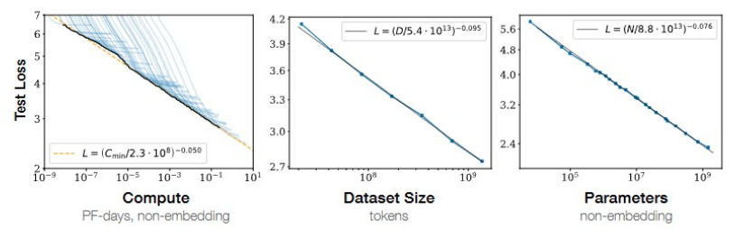
1.4 Deep learning works!
The Intelligence Age is a transformative era where AI shifts from being a basic tool to foundational societal infrastructure (Sam Altman).
2 Representation learning: the core ML principle
2.1 The feature engineering problem
Traditional Actuarial Approach:
Manual variable selection
Domain expertise required
Interactions specified manually
Time-consuming process
Example: Motor insurance pricing:
Must decide: include Age and Age\(^2\)? Age \(\times\) Region? Etc.
Hundreds of possible interactions
The Curse of Dimensionality:
Increasing feature sets
Telematics data: 1000s of variables
High-frequency data
Text data: unstructured
Images: pixel-level data
Time series: temporal dependencies
\(\Longrightarrow\) Manual feature engineering becomes infeasible!
2.2 Representation learning: automated feature construction
Problem: Learn data transformations that make it easier to extract useful information for predictive modeling
Key idea: Let the model discover the features
Traditional examples: Principal component analysis (PCA) and partial least squares (PLS) method
Deep learning approach: Hierarchical feature learning (layer by layer)
2.3 Fashion-MNIST example: dataset overview
Fashion-MNIST dataset contains 70,000 grayscale images (28x28 pixels) of clothing items. MNIST stands for Modified National Institute of Standards and Technology.
Task: Classify the type of clothing.
Ideal for comparing representation learning approaches.
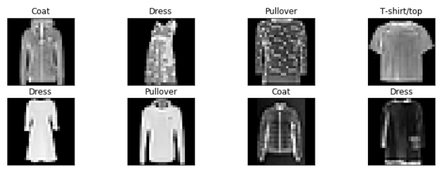
2.4 Fashion-MNIST example: traditional PCA results
- Direct PCA does not show much differentiation between classes.
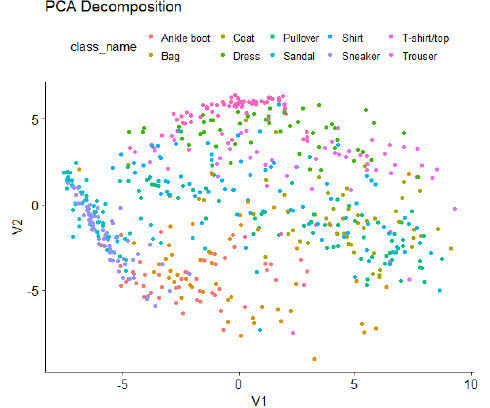
Often, linear methods fail to capture the patterns in image data.
Manual feature engineering would be required to improve performance.
2.5 Representation learning
Representation Learning is an ML technique where algorithms automatically design features that are optimal for a particular task.
The feature space then comprises the learned features which can be fed into a DL model.
BUT: Simple representation learning approaches often fail when applied to high dimensional data.
Representation learning at a glance: Given inputs \(\boldsymbol{X} \in \mathbb{R}^q\) and a response \(Y\), learn a mapping \(\phi : \mathbb{R}^q \to \mathbb{R}^p\) with \(p \ll q\) so that simple predictors on \(\boldsymbol{Z} = \phi(\boldsymbol{X})\) perform well (Bengio, Courville, & Vincent, 2013).
2.6 Deep learning
Deep Learning is a representation learning technique that automatically constructs hierarchies of complex features (layer by layer) to represent abstract concepts.
Features in higher layers (closer to outputs) are composed of simpler features from lower layers (closer to inputs).
A typical example is a feed-forward neural network (FNN).
The principle: Provide raw data to the DL architecture and let it figure out what and how to learn (by a suitable training algorithm).
2.7 Fashion-MNIST example: deep learning solution
Apply a deep autoencoder (a type of non-linear PCA) to the same data.
Differences between some types of clothing are now much more clearly emphasized.
The deep representation automatically captures meaningful differences between the images without much human input.
This is an example of automated feature engineering.
In contrast to the PCA, it considers non-linear transformations of the inputs.
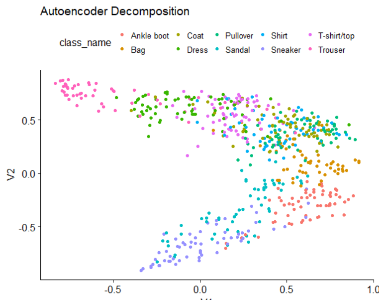
2.8 From representation to prediction
Step 1: Deep sequential layers learn representations
Step 2: Final layer performs prediction using the learned features
Key insight: Deep network \(=\) Feature extractor \(+\) Predictor
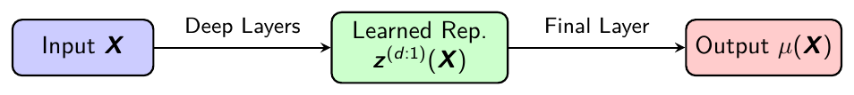
- Paradigm: Deep network \(=\) Encoder \(+\) Decoder modules
2.9 Why depth is important
Depth in neural networks refers to the number of sequential layers, allowing for hierarchical feature construction.
Shallow networks only allow for modeling (simple) direct relationships between inputs and outputs. Approximating more complex ones requires very wide shallow networks.
Deeper layers build upon lower-level features: early layers detect basic patterns (e.g., edges in images), while deeper layers combine them into complex abstractions (e.g., objects or concepts).
This hierarchy enables the network to capture intricate, non-linear interactions and dependencies in data that would require exponentially more parameters in a shallow model. Intuitively, this is similar to approximating a diagonal line by a step function.
Theoretical support: Deep networks can approximate complex functions more efficiently than shallow ones (universal approximation theorem extensions).
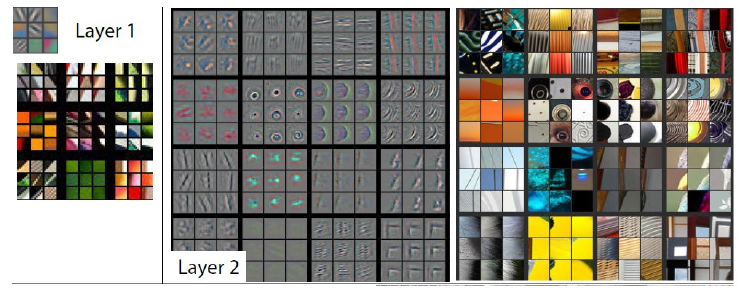
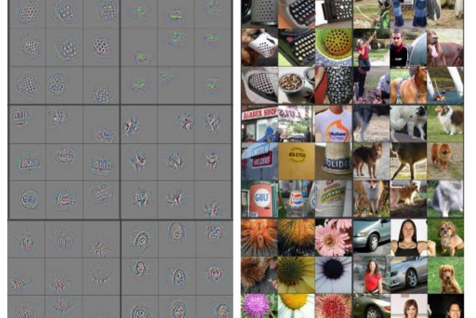
3 Feed-forward neural networks
3.1 Single layer FNN \(=\) GLM
Single layer network
Circles \(=\) input/output variables
Lines \(=\) connections (left to right)
The input layer holds the input variables (covariates)…
…which are multiplied by weights (coefficients) to get the result (output/prediction). This may involve an additional link (activation) function.
A single layer neural network is a generalized linear model (GLM)!
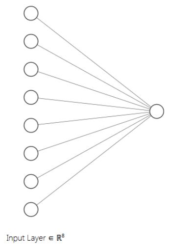
3.2 Deep feed-forward neural network
Deep \(=\) multiple sequential layers
Feed-forward \(=\) data/signals travel from left to right
More complicated (hierarchical) representations of the input data are learned in the hidden layers.
This involves non-linear activations in each neuron.
The weights are trained to extract the relevant information for the predictive problem at hand.
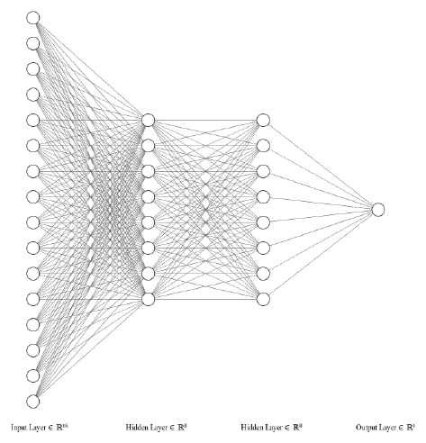
3.3 FNN generalizes GLM
Intermediate layers perform representation learning.
The last layer is a (generalized) linear model, with input variables being the new representation of the data.
One can strip off the last layer and use the learned features in other models, like XGBoost.
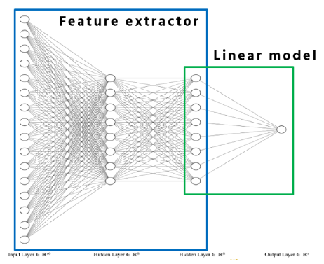
3.4 Mathematical formulation, in brief
Notation:
Input variable: \(\boldsymbol{X} \in \mathbb{R}^{q_0}\)
Depth: \(d \in \mathbb{N}\)
Hidden layers: \(m = 1, \ldots, d\) with \(q_m\) neurons each
Hidden layer \(m\) transformation: \(\boldsymbol{z}^{(m)} : \mathbb{R}^{q_{m-1}} \to \mathbb{R}^{q_m}\)
Composition of hidden layers: \(\boldsymbol{z}^{(d:1)} = \boldsymbol{z}^{(d)} \circ \cdots \circ \boldsymbol{z}^{(1)}\)
FNN regression function: \[\boldsymbol{X} ~\mapsto~ \mu_\vartheta(\boldsymbol{X}) = g^{-1} \left( w^{(d+1)}_0 + \langle \boldsymbol{w}^{(d+1)}, \boldsymbol{z}^{(d:1)}(\boldsymbol{X}) \rangle \right),\] with inverse link \(g^{-1}\) and where \(\vartheta\) contains all network parameters.
3.5 Pre- and post-activation in FNNs
Pre-activation: In each layer of a FNN, the inputs are multiplied by the layer’s weights and added to biases (linear regression) \[\boldsymbol{w}^{(m)}_0 + W^{(m)} \boldsymbol{x} \in \mathbb{R}^{q_m},\] where \(\boldsymbol{x} \in \mathbb{R}^{q_{m-1}}\) is the input, \(W^{(m)} \in \mathbb{R}^{q_m \times q_{m-1}}\) are the weights, and \(\boldsymbol{w}^{(m)}_0 \in \mathbb{R}^{q_m}\) is the bias parameter of the \(m\)-th layer.
Post-activation: Select a non-linear activation function \(\phi\) \[\boldsymbol{x} ~\mapsto~ \boldsymbol{z}^{(m)}(\boldsymbol{x}) = \phi \left( \boldsymbol{w}^{(m)}_0 + W^{(m)} \boldsymbol{x} \right) \in \mathbb{R}^{q_m},\] this is understood component-wise \(\Longrightarrow\) each neuron is a GLM.
The activation introduces non-linearity, enabling the network to model complex patterns. Without it, the network would behave like a single linear model regardless of depth.
4 Advanced architectures: a deep dive
4.1 From vectors to tensors
Traditional tabular data: Inputs \(\boldsymbol{X} \in \mathbb{R}^q\) are vectors (1D tensor)
Extended tensor structures (time-causal/spatial structure):
Time series data: \(\boldsymbol{X}_{1:t} \in \mathbb{R}^{t \times q}\) (2D tensor)
Images: \(\boldsymbol{X}_{1:t, 1:s} \in \mathbb{R}^{t \times s \times 3}\) (3D tensor with three color channels RGB)
[Panel data: Multiple instances over time]
Key challenge: How to design architectures that respect such structure?
FNNs: Ignore temporal/spatial structure
CNNs: Exploit local patterns via convolutions (1D or 2D CNNs)
RNNs: Capture sequential/temporal dependencies
4.2 Convolutional neural networks: a motivation
Problem with FNNs for spatial/temporal data:
Full connectivity: Every input connects to every neuron
Parameter explosion: Image \(100 \times 100 \times 3 \to 30{,}000\) inputs!
No spatial awareness: Adjacent pixels are treated independently
CNN solution (LeCun et al., 1998):
Local connectivity: Neurons only connect to small regions (receptive fields), think of a window
Parameter sharing: Same filter is applied across all positions, think of a rolling window (extracting local structure)
Hierarchical learning: Low-level \(\to\) High-level features
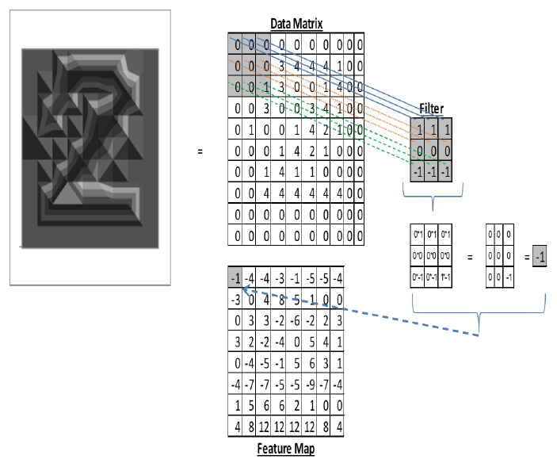
4.3 1D CNN: mathematical formulation
Input: Sequential data \(\boldsymbol{X}_{1:t} \in \mathbb{R}^{t \times q}\)
1D CNN layer with \(q_1\) filters (window parameter sets): \[\boldsymbol{z}^{(1)} : \mathbb{R}^{t \times q} \to \mathbb{R}^{t' \times q_1}\] where \(t' = \lfloor t - K + 1 \rfloor\), the number of “convolutions” from the rolling window.
Finite range convolution (we could use the \(*\)-symbol): \[z^{(1)}_{u,j} = \phi \left( w^{(1)}_{0,j} + \sum_{k=1}^K \langle \boldsymbol{w}^{(1)}_{k,j}, \boldsymbol{X}_{u-1+k} \rangle \right),\]
\(K\): Kernel size (window size)
\((\boldsymbol{w}^{(1)}_{k,j})_{k=1}^K \in \mathbb{R}^{K \times q}\): Filter weights of the \(j\)-th convolution, \(1 \leq j \leq q_1\)
4.4 1D CNN intuition and 2D CNN adaption
Algebraically, the 1D CNN architecture has a very similar structure as a FNN, only the scalar product is replaced by a convolutional operation (that acts locally respecting sequential structure).
1D CNNs can be composed to a deep 1D CNN architecture.
To reduce the dimension, often a deep 1D CNN architecture is followed by a pooling layer, which then constitutes the encoder/feature extractor.
A subsequent GLM/FNN decoder maps to the output.
There is the obvious 2D CNN extension by having a rolling window across two dimensions to process spatial data such as images.
4.5 Recurrent neural networks: sequential memory
Motivation: Process sequences of variable length with memory (construction of filtration that models the relevant information process)
Recurrent update at time \(u\): \[z^{(1)}_{u,j} = \phi \left( w^{(1)}_{0,j} + \langle \boldsymbol{w}^{(1)}_j, \boldsymbol{X}_u \rangle + \langle \boldsymbol{v}^{(1)}_j, \boldsymbol{z}^{(1)}_{u-1} \rangle \right) \qquad \text{for } 1 \leq j \leq q_1,\]
\(\boldsymbol{X}_u \in \mathbb{R}^q\): Current input at time \(u\)
\(\boldsymbol{z}^{(1)}_{u-1} \in \mathbb{R}^{q_1}\): Previous hidden state (memory) from times \(\leq u-1\)
Parameters: \(q_1(1 + q + q_1)\) (shared across time)
Key insight: Same as FNN but with recurrent connection \(\boldsymbol{z}^{(1)}_{u-1} \mapsto \boldsymbol{z}^{(1)}_u\)
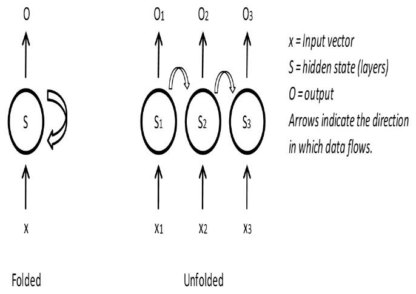
4.6 LSTM architecture diagram
LSTM architecture is a specialized RNN that allows for long-range dependence by using different “gates” (Hochreiter & Schmidhuber, 1997).
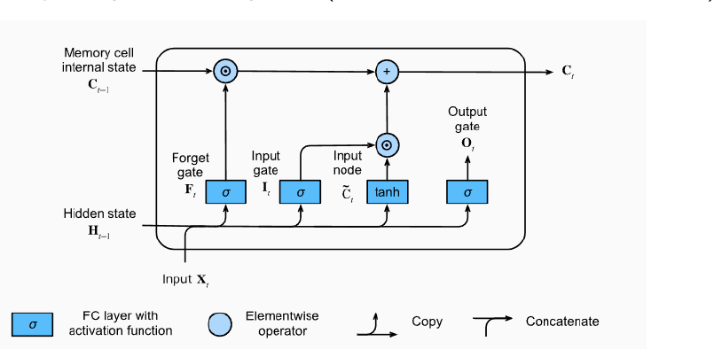
4.7 GRU architecture diagram
GRU is a simplified LSTM alternative that uses less gates and parameters (Cho, van Merriënboer, Bahdanau, & Bengio, 2014).
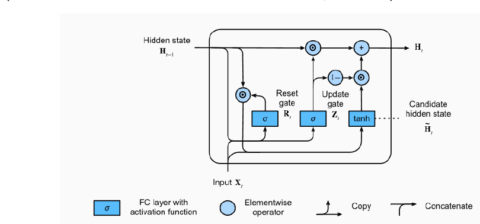
4.8 CNN vs. RNN: when to use which?
Use CNNs when:
Local patterns matter
Translation invariance needed
Spatial/grid structure exists
Parallel processing required
Examples: Telematics data heatmaps; Geographic risk maps; Fixed-size triangles
Use RNNs when:
Sequential order crucial
Variable lengths common (non-time-distributed output)
Long-term dependencies
Temporal causality important
Examples: Policy history modeling; Text processing (claims); Time series forecasting
Hybrid approaches: CNN for feature extraction \(\to\) RNN for sequences
4.9 Embedding layer, categorical covariates
One-hot encoding expresses the prior that categories are orthogonal.
The traditional actuarial solution is Bühlmann credibility.
Embedding layer idea: Related categories should cluster together.
It learns a dense vector transformation of sparse input vectors and clusters similar categories.
Can be regularized by variational inference to receive credible embeddings (Richman & Wüthrich, 2024), especially for high-cardinality categorical covariates, e.g., car models or job profiles
4.10 Autoencoder, unsupervised learning
An autoencoder is a network trained to produce an output similar to its input.
A “bottleneck” in the middle restricts the dimension of the encoded data.
It performs a type of non-linear PCA (without orthonormality constraints).
The bottleneck layer expresses the prior that the data can be summarized in only a few dimensions (low-dimensional manifold).
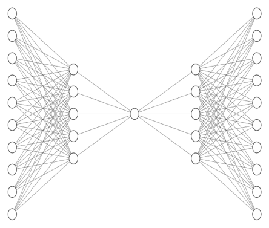
4.11 Transformers and attention, Vaswani et al. (2017)
Key idea: Attention mechanism, giving “contextualized embeddings”
Self-attention formula: \[\mathrm{Attention}(Q, K, V) = \mathrm{softmax}\left( \frac{QK^\top}{\sqrt{d}} \right) V,\] where \(Q\), \(K\), \(V\) are query, key, value matrices (to communicate with surrounding).
Advantages:
Parallel processing (unlike RNNs) \(=\) efficient computation on GPUs
Long-range dependencies
Somewhat interpretable attention weights
\(\Longrightarrow\) Full coverage in dedicated Transformer lecture
4.12 LocalGLMnet: interpretability focus
Key idea: Locally linear models
Architecture (Richman & Wüthrich, 2023):
Neural network learns coefficients of local GLMs
Each combination of covariates receives its own GLM (parameter)
Predicions made as sum over \(w_j(\boldsymbol{X}) X_j\)
Benefits:
Interpretability for predictions
Captures heterogeneity
More regulatory compliance friendly than FNNs
\(\Longrightarrow\) Detailed treatment in LocalGLMnet lecture
5 Combined actuarial neural network (CANN)
5.1 CANN: bridging classical and modern modeling
Motivation:
GLMs are interpretable but may miss complex patterns
Deep networks are powerful but less interpretable
Can we combine the two worlds?
CANN Architecture (Wüthrich & Merz, 2019): \[\mu^{\rm CANN}(\boldsymbol{X}) = g^{-1} \left( \underbrace{\langle \widehat{\vartheta}^{\,\rm MLE}, \boldsymbol{X} \rangle}_{\text{GLM baseline}} + \underbrace{\langle \boldsymbol{w}^{(d+1)}, \boldsymbol{z}^{(d:1)}(\boldsymbol{X}) \rangle}_{\text{Network correction}} \right).\]
5.2 CANN: implementation details
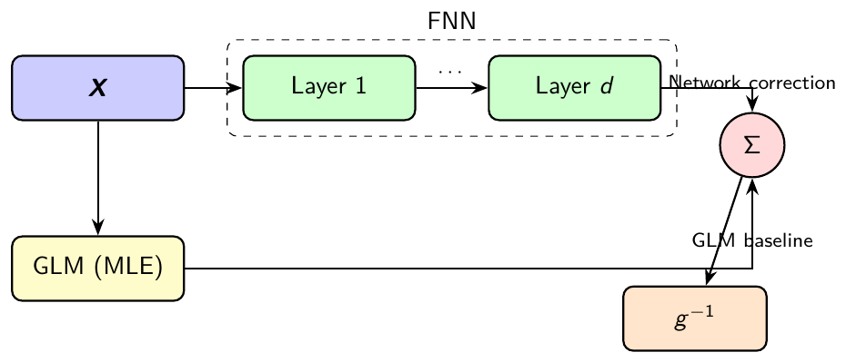
2-step training procedure:
Fit GLM using MLE, and freeze parameters \(\widehat{\vartheta}^{\,\rm MLE}\)
Train FNN to learn residual patterns (corrections to GLM predictions)
5.3 CANN: advantages
Interpretability: GLM component provides baseline understanding
Performance: FNN captures non-linear patterns and interactions
Stability: GLM ensures reasonable predictions even if FNN fails
Diagnostic: FNN contribution shows where GLM is insufficient
Connection to ResNet (He et al., 2016):
First term: residual/skip connection (input \(\boldsymbol{X}\) maps directly to output)
Second term: classic FNN architecture for non-linear corrections
Interpretation: Linear GLM term \(+\) non-linear FNN for interactions not captured by GLM
6 Conclusion
6.1 Key takeaways
Core principle: Representation learning automates feature engineering
Mathematical foundation: FNNs generalize GLMs through composition of non-linear functions consisting of (GLM) neurons
Advanced architectures: CNNs, RNNs, Transformers for specific data types (temporal and spatial data)
Practical approach: CANN and LocalGLMnet bridge traditional and modern methods being attractive for actuarial modeling
Copyright
© The Authors
This notebook and these slides are part of the project “AI Tools for Actuaries”. The lecture notes can be downloaded from:
https://papers.ssrn.com/sol3/papers.cfm?abstract_id=5162304
\(\,\)
- This material is provided to reusers to distribute, remix, adapt, and build upon the material in any medium or format for noncommercial purposes only, and only so long as attribution and credit is given to the original authors and source, and if you indicate if changes were made. This aligns with the Creative Commons Attribution 4.0 International License CC BY-NC.